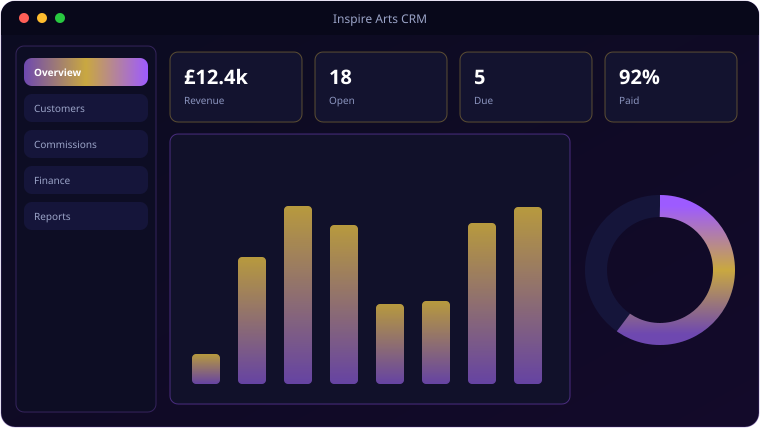

A look inside Inspire Arts CRM.

Everything Inspire Arts CRM brings to the table.
Customers & Commissions
Full customer records and contacts, plus a commission pipeline with a kanban board, PDF quotes and file attachments.
Sales & Invoices
Generate PDF invoices with VAT, discount and shipping; track Pending/Paid/Overdue/Refunded across eleven sales channels.
Payment Schedules
Recurring plans (weekly to annual) with one-click “Log Payment” that creates the invoice and advances the next date.
Business & Home Finance
Non-customer finance entries (grants, loans, transfers) and a complete home-finance module with budgets and custom fields.
Charts Everywhere
Revenue by month, commission status, top customers, payment totals and sales-channel breakdowns — all on Chart.js.
Multi-Account & Roles
A master auth DB plus per-account databases, account switching, and role decorators for business vs home views.
System requirements.
Server (self-host)
- OS: Windows 10/11 or any modern Linux
- Runtime: Python 3.10+
- CPU: Dual-core (quad-core recommended)
- Memory: 2 GB RAM (4 GB+ recommended)
- Storage: Scales with your data / uploads
- Network: LAN access, or a port forward / reverse proxy for the internet
Client (any device)
- Browser: Chrome, Edge, Firefox or Safari (current)
- Device: Any desktop, laptop, tablet or phone
- JavaScript: enabled
- Connection: same Wi-Fi as the server, or internet if exposed
- Account: created on first visit
Runs on a Waitress server reachable from any device on the same Wi-Fi; cloudflared is bundled for later internet exposure.
The details.
| Stack | Flask + SQLite (per-account DBs) + Waitress, Bootstrap 5, Chart.js |
| CRM | Customers, contacts, commissions (kanban), PDF quotes/invoices, attachments |
| Finance | Sales channels, payment schedules, business + home finance, budgets |
| Branding | Purple #4A2C6E / gold #C9A840 |
| Run | Desktop launcher → http://localhost:5000 (LAN-accessible) |
Runs on 0.0.0.0:5000 — reachable from any device on the same Wi-Fi. cloudflared is bundled for later internet exposure.
Get Inspire Arts CRM.
Customers, commissions, invoicing and finance in one CRM.
⬇ Download Inspire Arts CRMInspire Arts CRM source · self-hosted